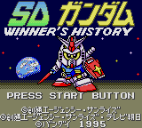

SD Gundam Winner's History (MG)

This is a war-strategy game for the Game Gear. Haven't played it enough to
understand how it works.
Gundam Arms (VGB)
![[Gundam Arms]](images/GB/garms.gif) This appears to be a Gundam-based game. I didn't find it in Ken Arromdee's
list, but the mecha appear to be from Gundam. You basically run around on a
battle field shooting your opponents.
This appears to be a Gundam-based game. I didn't find it in Ken Arromdee's
list, but the mecha appear to be from Gundam. You basically run around on a
battle field shooting your opponents.
Mobile Suit Gundam: Last Shooting (MSX)
![[Mobile Suit Gundam: Last Shooting]](images/MSX/gun_msx.gif) This is a multi-level game where each level has a different objective. The
first level has your character dodge falling debris before entering his mobile
suit. The second level has you shooting other mechs and gun emplacements.
Haven't played it past the second level.
This is a multi-level game where each level has a different objective. The
first level has your character dodge falling debris before entering his mobile
suit. The second level has you shooting other mechs and gun emplacements.
Haven't played it past the second level.
Mobile Suit Gundam (MSX)
This is the typical Gundam war strategy simulation. You pick your officers
and troops and try to beat your opponent. To play this game under fMSX,
you must copy the file to the drivea.dsk file in your fMSX directory. Make
sure there are no carta.rom files in that directory; from there, you should
just be able to start fmsx without any ROM files listed on the command line,
and the game should boot right up.
Shin SD Gundam (VGB)
This appears to be a Zelda-style RPG. Haven't played it much yet.
SD Gundam Kunitori (VGB)
![[SD Gundam Kunitori]](images/GB/gunk_cap.gif) This appears to be a war-strategy game. Haven't been able to figure out how
to play it much yet.
This appears to be a war-strategy game. Haven't been able to figure out how
to play it much yet.
Return to Emulator Table of Contents
Last Modified 11 March 1997
Created 2 Sept 1996
Luis A. Cruz
cruzl@ccs.neu.edu